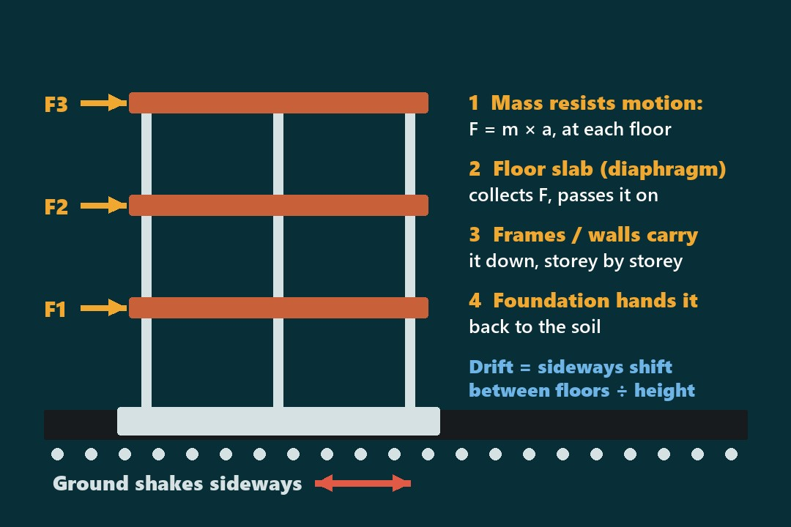
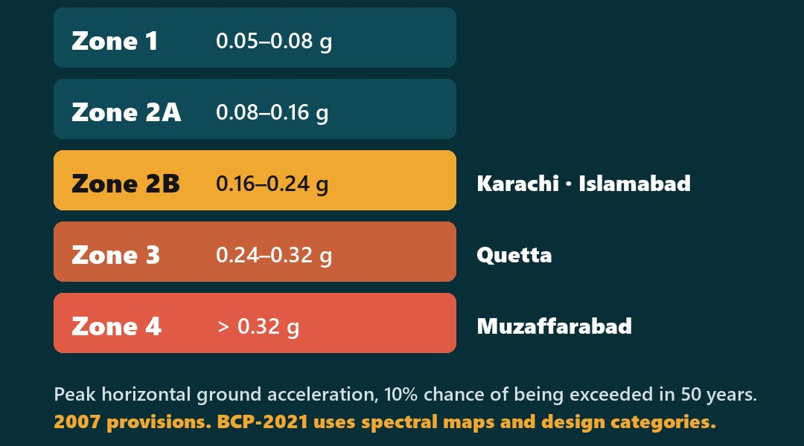
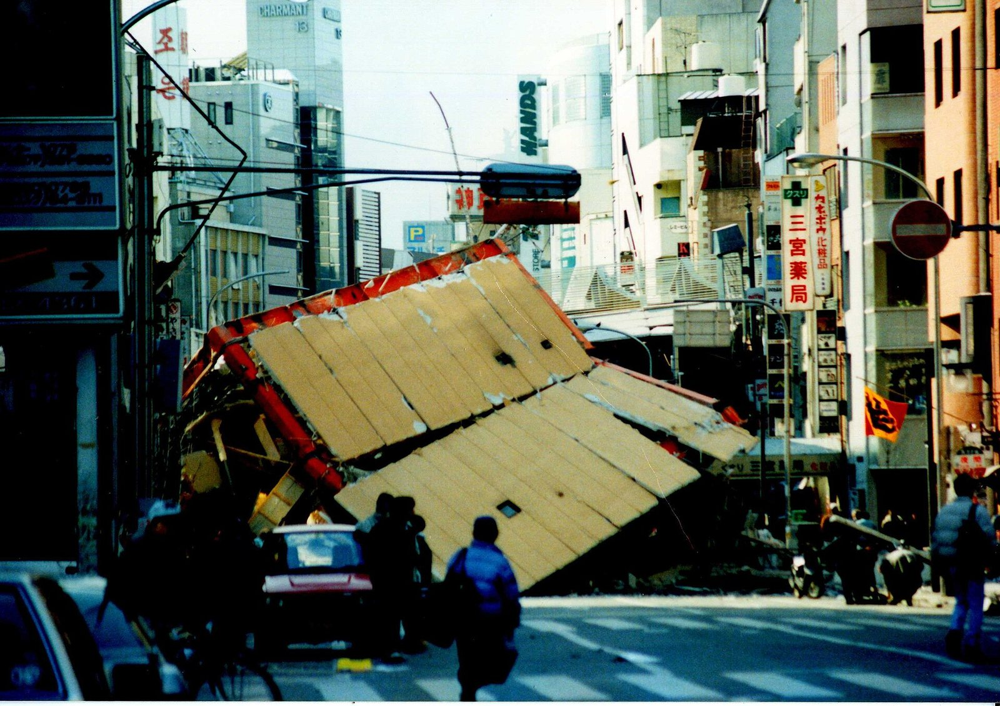
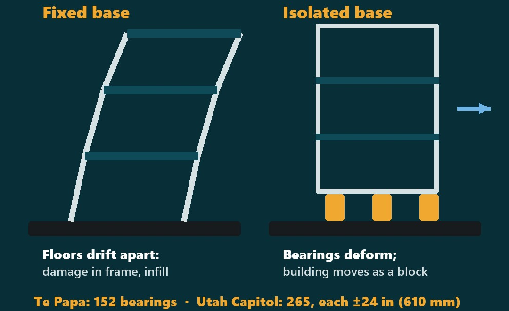
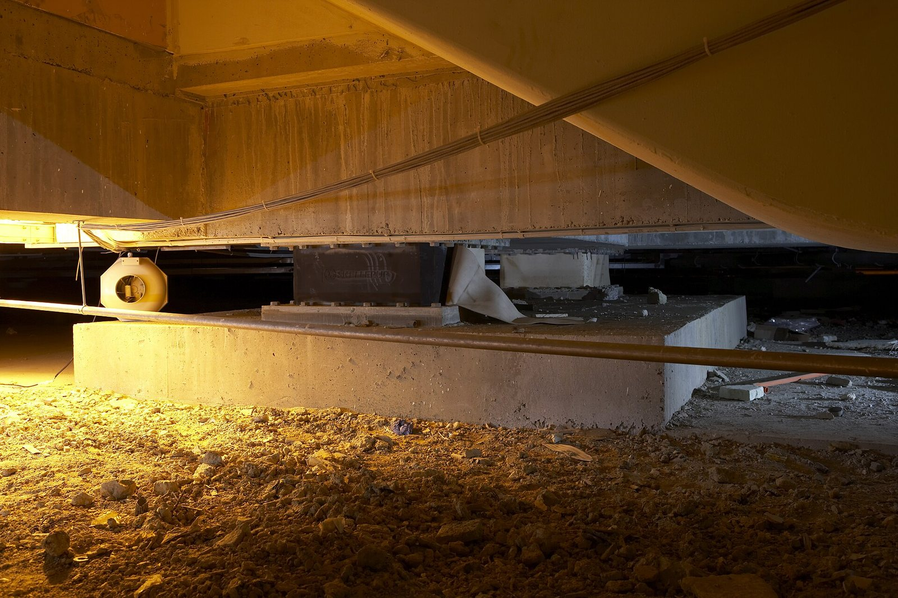
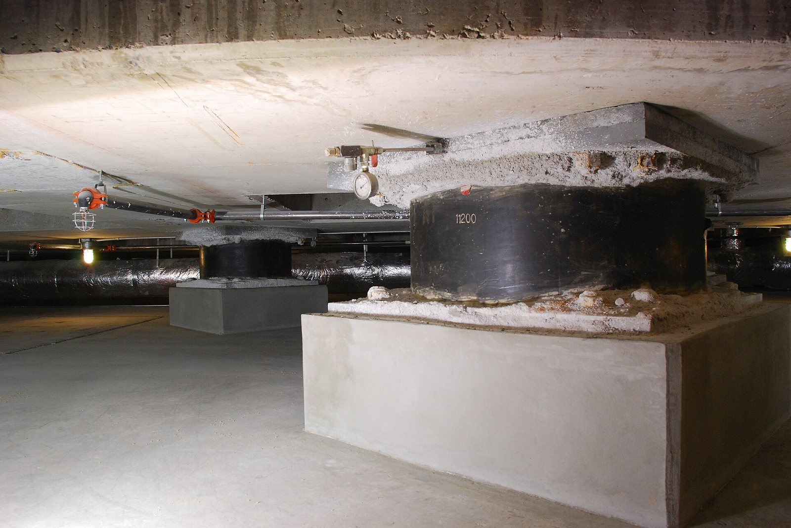
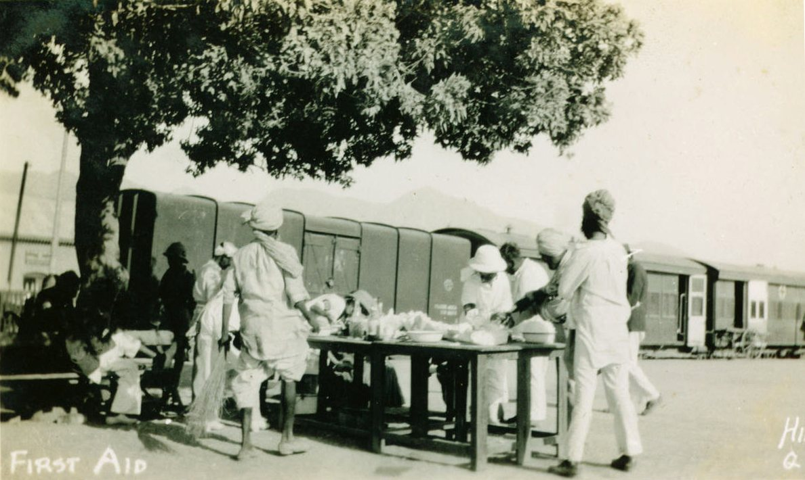
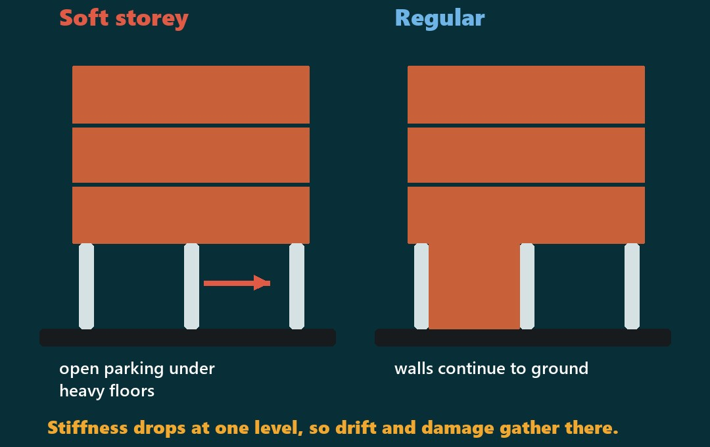

203,579 homes destroyed in one morning. What does the seismic code ask?
Standards that Save Lives · Episode 05 · Seismic design: BCP, Eurocode 8, Japan
How does an earthquake load a building?
The ground moves; the building's mass resists
Ground motion
The ground accelerates sideways, measured in g.
Inertia
Each floor's mass pushes back: F = m × a.
Load path
Floors to frames or walls, to foundation, to soil.
What decides whether it survives
Stiffness
Limits drift: sideways shift between floors.
Ductility
Bends and yields without breaking.
Regularity
No sudden weak or soft storey.
Our view, from first principles: a code turns these into numbers you can design and check.
Where the force goes

Not to scale. Every link must hold: a weak joint, column or wall breaks the chain.
From world codes to one beam-column joint
Eurocode 8 (Europe), ASCE 7 (USA), Japan's Building Standard Law.
BCP SP-2007 after 2005; now BCP-2021, based on IBC 2021.
Zone or design category, importance factor, drift limit.
Joints, ties and laps detailed for ductility, checked on site.
8 October 2005, the official count
Five seismic zones (Table 2.1)

Examples from the 2007 town list. Check the BCP-2021 maps for a site today.
Key numbers in the codes
Design earthquake
BCP SP-2007: 10% in 50 years (475-year event). Eurocode 8, 2nd generation: 475 years, CC2.
Drift limit, s.5.30.10.2
Storey drift ≤ 0.025 h if period < 0.7 s; ≤ 0.020 h if 0.7 s or more.
Importance, Table 5.10
Essential facilities (hospital surgery and emergency areas, fire and police stations): I = 1.25; components Ip = 1.50.
BCP-2021
IBC 2021 basis: spectral maps and seismic design categories replace zones.
Eurocodes
Second generation due by 2027; old ones withdrawn in 2028.

Kobe 1995: pre-1981 buildings suffered more
Japan's damage record found a big difference in resistance before and after the 1981 code. Its lesson: the revised code worked.
Let the ground move under the building

Lead-rubber bearings were invented in New Zealand by Dr William Robinson and his team.

Te Papa slid only 15–20 mm
In the Kaikōura earthquake the museum on 152 isolators moved 15–20 mm; only nine objects were damaged.

A historic capitol, retrofitted, not lost
The Utah State Capitol was placed on 265 base isolators, each able to move 24 in (610 mm); columns, walls and dome strengthened.
saved per $1 spent on adopting the latest codes
US-wide estimate by NIBS, the US National Institute of Building Sciences (2019).
What is confirmed
1986 → 2007 → 2021
Pakistan Building Code 1986; Seismic Provisions 2007 after the quake; BCP-2021 (PEC with the ICC, Aug 2021).
Promise
The 2007 preface promised revision every three years. The next edition came 14 years later.
Enforcement
ADB–World Bank, 2005: compliance with codes needs to be better enforced.
Retrofit
It asked for a national retrofit study, schools and hospitals first.
Achievement: ERRA
Rural homes rebuilt with cash instalments tied to staged inspections (plinth, lintel).

Quetta and Karachi also face serious seismic risk
So the 2005 assessment warned. Here, a first aid unit at the railway station after the 1935 Quetta earthquake.
The soft storey starts on the plan

Our view: regular plans, walls to the ground, short spans, and the engineer from concept.
Gap and benchmark
PAKISTAN
- Revision promised every 3 years; 14 years to the next edition
- 2005: compliance needs better enforcement
- Retrofit of schools and hospitals: recommended in 2005
BEST PRACTICE
- Japan: 1981 revision; post-1981 buildings did better in Kobe
- ERRA: cash instalments tied to stage inspections
- Utah, NZ: public buildings isolated and retrofitted
Inspect to release, as ERRA did
Logic
Codes work when checked (Japan 1981). ERRA tied money to inspections. Cities can tie approvals to stages.
The idea
Stamped design by a PEC-registered engineer; inspection at foundation, frame, completion; counts published.
Schools first
Start the retrofit programme the 2005 assessment recommended.
Limits
Needs inspectors, fees and records; test in one authority first.
Seismic basics for every project
Code and site
Code edition on the drawings; zone or design category; soil report.
Design
PEC-registered engineer's stamped design; drift checked; importance factor for schools, hospitals.
Form
Regular plan and elevation; no soft storeys, heavy overhangs or abrupt stiffness changes.
Detail and site
Joints, ties, laps for ductility; infill, parapets, roof tanks tied back; inspections recorded, kept with the owner.
How many times has a structural engineer been on site at your last building?
Which stage would you make a mandatory inspection, and why? Next: Episode 06, green building ratings.
Answer in the comments of the post that brought you here, or share it with a colleague:
Rana Mohsin Ali · Archiverse-Pakistan · 11 November 2026
Sources: Archiverse first-principles framing; Ministry of Housing & Works, Building Code of Pakistan - Seismic Provisions 2007 (Table 2.1, s.5.30.10.2, Table 5.10); Archiverse diagram (first principles); Iervolino, EC8 2nd generation (Hilti Seismic Academy); Ingenio; BSI Knowledge; Scientific Reports (2024), BCP-2007 vs BCP-2021; ICC press release, 19 Nov 2021; ADB & World Bank, Pakistan 2005 Earthquake: Preliminary Damage and Needs Assessment, 12 Nov 2005; Te Papa, Halting jolts: how Te Papa resists earthquakes; NZ earthquake engineering awards (lead-rubber bearing); Reaveley Engineers, Utah State Capitol base isolation; BD+C Platinum Award; NIBS, Natural Hazard Mitigation Saves 2019; ICC Codes Save; ADB TA completion report 40563-013; IRIN; UN-Habitat Pakistan; IISEE / Building Research Institute, Japan, Reference 5: Hanshin-Awaji earthquake; RMS Kobe retrospective; Archiverse draft checklist (opinion), built on Ministry of Housing & Works, Building Code of Pakistan - Seismic Provisions 2007 (Table 2.1, s.5.30.10.2, Table 5.10)
Photos: Muzaffarabad after the 8 Oct 2005 earthquake: Timothy Smith, U.S. Navy, public domain, via Wikimedia Commons; Collapsed building, Ikuta, Kobe, 17 Jan 1995: Akiyoshi Matsuoka, CC BY-SA 3.0, via Wikimedia Commons; Base isolators under Te Papa: Museum of New Zealand Te Papa Tongarewa, CC BY-SA 4.0, via Wikimedia Commons; Base isolators under the Utah State Capitol, 2008: Mike Renlund, CC BY 2.0, via Wikimedia Commons; 1935 earthquake, first aid unit at the railway station: HIRO (possibly John Ernest Brown), 1935, public domain, via Wikimedia Commons